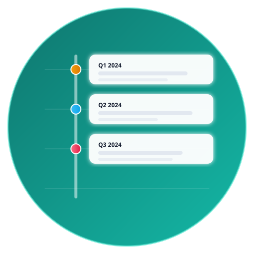

DocOps Timeline Visualizer

DocOps Timeline
Map milestones and history into clean, easy-to-scan timelines
- What is DocOps Timeline?
- Default Look
- Horizontal Layout
- Format Options
- Best Practices
- Common Use Cases
What is DocOps Timeline?
DocOps Timeline turns dated milestones into structured visuals. Use it for product history, release cycles, historical timelines, or multi-phase program updates.
Key Features
- Chronological clarity - Show milestones in order with consistent formatting
- Vertical and horizontal layouts - Choose the format that fits your content
- Rich descriptions - Include multi-line details and links
- Readable at a glance - Ideal for roadmap or historical summaries
Default Look
Horizontal Layout
date: 1837 - 1901 text: Victorian Era Literature reflected the social, economic, and cultural changes of the Industrial Revolution. Notable authors include https://en.wikipedia.org/wiki/Charles_Dickens Charles Dickens and https://en.wikipedia.org/wiki/George_Eliot George Eliot.
date: 1914 - 1945 text: Modernism Characterized by a break with traditional forms and a focus on experimentation. Important writers include https://en.wikipedia.org/wiki/James_Joyce James Joyce and https://en.wikipedia.org/wiki/Virginia_Woolf Virginia Woolf.
date: 1945 - present text: Postmodernism Challenges the distinction between high and low culture and emphasizes fragmentation and skepticism. Key authors include https://en.wikipedia.org/wiki/Thomas_Pynchon Thomas Pynchon and https://en.wikipedia.org/wiki/Toni_Morrison Toni Morrison." data-kind="timeline">
Format Options
Timeline Structure
Use repeated date and text blocks. Bullet lines can be added under each text block.
[docops:timeline]
date: Q1 2024
text: Release v2.0
• Highlight 1
• Highlight 2
[/docops]
Layout Options
- type=H - Horizontal layout
- colorIdx - Color palette index
- width - Canvas width in pixels
Best Practices
- Keep dates consistent - Use quarters, months, or exact dates
- Limit bullet depth - Two to four lines per milestone
- Balance detail - Move long narratives into linked docs
- Use horizontal sparingly - Best for short, high-level timelines
🧭 Timeline Tip
Keep your timeline in one visual screen for easy scanning. If it grows too long, split by year or phase.
Common Use Cases
- Product release history - Track shipped milestones
- Roadmap summaries - Communicate upcoming phases
- Historical overviews - Document organizational evolution
- Program reporting - Show major deliverables over time